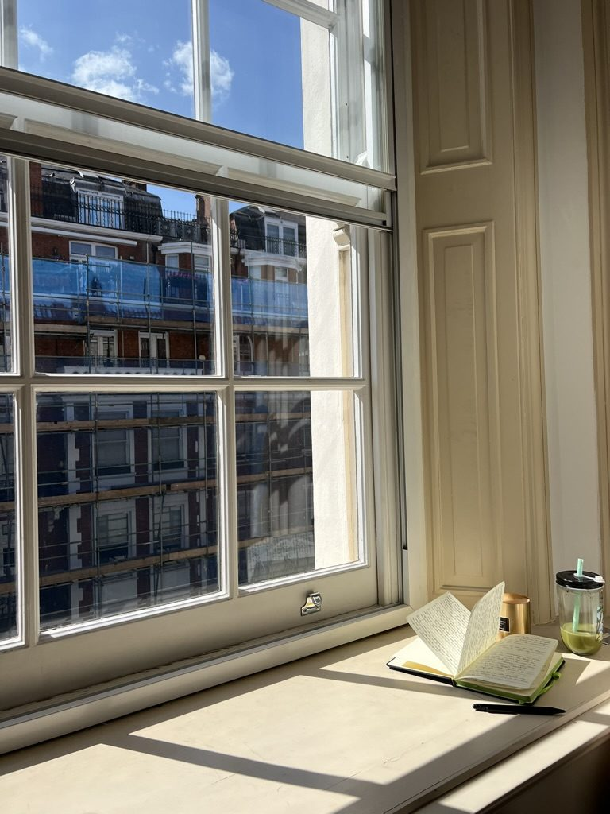
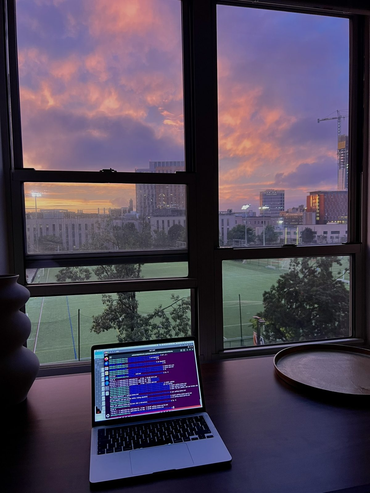

About me
Meet Me
I’m a third-year Computer Science student at Northeastern University, concentrating in Artificial Intelligence and minoring in Behavioral Neuroscience. I’m fascinated by the intersection of technology, biology, and human behaviour, particularly how computation can help us better understand the world around us.
My interests have led me into several areas of research. At Harvard’s Engert Lab, I worked on computer vision and 3D animal tracking, and I’m now exploring animal-computer interaction through research at Northeastern. I’m especially interested in neurotechnology, computational neuroscience, and the applications of AI in healthcare. What excites me most is tackling problems that don't fit neatly into one discipline. I enjoy figuring things out independently, experimenting with different approaches, and building something from an idea.
Creativity is just as important to me as technology. Fashion has always been a way for me to express myself, and as Co-Creative Director of Avenue Magazine, I get to explore that through visual storytelling and editorial design. I also love reading and writing, particularly poetry. They give me a different way to think, question things, and make sense of the world.
Sport has shaped the way I approach challenges as well. I run marathons and cycle, and over the years I’ve also been involved in rugby, dance, hiking, and calisthenics. Across all of these interests, I’m motivated by curiosity and the challenge of learning something deeply. I enjoy moving between disciplines, finding connections between seemingly unrelated ideas, and taking on work that pushes me beyond what I already know.

